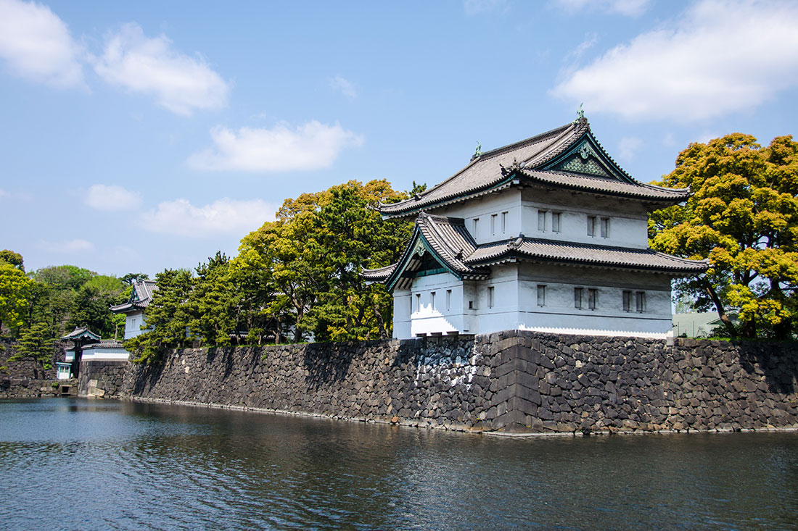

О Токио
Токио, столица далекой и процветающей Японии, ошеломляет туристов буквально с первых мгновений, как только нога путешественника ступает на его землю. Кажется, здесь всё не так, как в других городах: и невероятно сложная планировка кварталов, и запутанные линии метро, которые воспринимаются как не связанные друг с другом, и сплошные джунгли из проводов городских коммуникаций. В часы пик люди словно сливаются в одну реку, и ее потоки заполняют собой улицы, подземные переходы, общественный транспорт. Здесь нужно всегда держать ухо востро, ведь очень легко заблудиться, попав совсем не туда, где вы чаяли оказаться.

Достопримечательности

Квартал Асакуса
Один из самых узнаваемых символов Токио

Императорский дворец Токио
Одним из самых культовых мест Токио